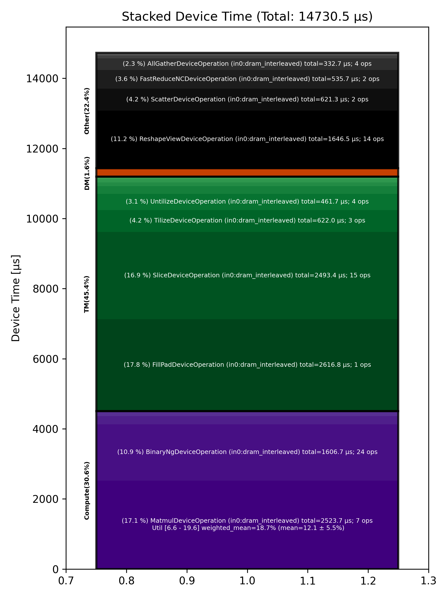

🚀 Performance Report 🚀 ======================== ID Total % Bound OP Code Device Device Time Op-to-Op Gap Cores DRAM DRAM % FLOPs FLOPs % Math Fidelity --------------------------------------------------------------------------------------------------------------------------------------------------------------------------- 5 0.4 % LayerNormDeviceOperation 3 108 μs 1 BF16, BF16 => BF16 52 0.2 % SLOW MatmulDeviceOperation 32 x 2880 x 512 18 44 μs 1 μs 16 39 GB/s 13.5 % 2.2 TFLOPs 6.6 % HiFi2 BF16 x BFP8 => BF16 73 0.1 % ReshapeViewDeviceOperation 7 18 μs 1 μs 72 BF16 => BF16 99 0.0 % SliceDeviceOperation 1 10 μs 1 μs 72 BF16 => BF16 155 0.1 % BinaryNgDeviceOperation 25 28 μs 1 μs 72 BF16, BF16 => BF16 165 0.0 % SliceDeviceOperation 3 9 μs 1 μs 72 BF16 => BF16 194 0.1 % BinaryNgDeviceOperation 0 29 μs 1 μs 72 BF16, BF16 => BF16 233 0.1 % BinaryNgDeviceOperation 7 13 μs 1 μs 72 BF16, BF16 => BF16 282 0.1 % BinaryNgDeviceOperation 24 28 μs 1 μs 72 BF16, BF16 => BF16 320 0.1 % BinaryNgDeviceOperation 30 28 μs 1 μs 72 BF16, BF16 => BF16 337 0.1 % BinaryNgDeviceOperation 15 14 μs 1 μs 72 BF16, BF16 => BF16 364 0.0 % ConcatDeviceOperation 10 11 μs 1 μs 72 BF16, BF16 => BF16 386 0.1 % SLOW MatmulDeviceOperation 32 x 2880 x 64 0 31 μs 1 μs 2 12 GB/s 4.2 % 0.4 TFLOPs 9.3 % HiFi2 BF16 x BFP8 => BF16 424 0.0 % ReshapeViewDeviceOperation 6 5 μs 1 μs 64 BF16 => BF16 457 0.1 % SliceDeviceOperation 7 2 μs 29 μs 32 BF16 => BF16 490 0.4 % PermuteDeviceOperation 8 4 μs 94 μs 32 BF16 => BF16 523 0.7 % BinaryNgDeviceOperation 9 6 μs 164 μs 72 BF16, BF16 => BF16 563 0.3 % SliceDeviceOperation 17 2 μs 87 μs 32 BF16 => BF16 598 0.6 % PermuteDeviceOperation 20 4 μs 156 μs 32 BF16 => BF16 619 0.4 % BinaryNgDeviceOperation 9 6 μs 89 μs 72 BF16, BF16 => BF16 660 0.7 % BinaryNgDeviceOperation 18 3 μs 187 μs 72 BF16, BF16 => BF16 697 1.0 % BinaryNgDeviceOperation 23 6 μs 255 μs 72 BF16, BF16 => BF16 736 0.4 % BinaryNgDeviceOperation 30 6 μs 96 μs 72 BF16, BF16 => BF16 768 0.6 % BinaryNgDeviceOperation 30 3 μs 161 μs 72 BF16, BF16 => BF16 784 0.4 % ConcatDeviceOperation 14 2 μs 105 μs 64 BF16, BF16 => BF16 829 1.0 % InterleavedToShardedDeviceOperation 27 1 μs 267 μs 32 BF16 => BF16 858 0.9 % PagedUpdateCacheDeviceOperation 24 5 μs 222 μs 32 BF16, BF16 => BF16 870 1.3 % SLOW MatmulDeviceOperation 32 x 2880 x 64 4 30 μs 304 μs 2 12 GB/s 4.3 % 0.4 TFLOPs 9.6 % HiFi2 BF16 x BFP8 => BF16 913 0.4 % ReshapeViewDeviceOperation 15 5 μs 108 μs 64 BF16 => BF16 952 0.7 % PermuteDeviceOperation 22 5 μs 181 μs 64 BF16 => BF16 966 0.4 % InterleavedToShardedDeviceOperation 4 1 μs 107 μs 32 BF16 => BF16 1002 0.5 % PagedUpdateCacheDeviceOperation 8 5 μs 131 μs 32 BF16, BF16 => BF16 1055 0.4 % PermuteDeviceOperation 29 10 μs 102 μs 72 BF16 => BF16 1061 1.0 % SdpaDecodeDeviceOperation 3 19 μs 246 μs 72 BF16, BF16 => BF16 1090 0.7 % InterleavedToShardedDeviceOperation 0 1 μs 190 μs 32 BF16 => BF16 1146 1.0 % NLPConcatHeadsDecodeDeviceOperation 24 4 μs 252 μs 8 BF16 => BF16 1160 0.4 % ShardedToInterleavedDeviceOperation 6 1 μs 103 μs 8 BF16 => BF16 1202 1.8 % SLOW MatmulDeviceOperation 32 x 512 x 2880 16 15 μs 449 μs 45 112 GB/s 39.0 % 6.3 TFLOPs 13.6 % HiFi4 BF16 x BFP8 => BF16 1218 1.7 % AllGatherDeviceOperation 0 71 μs 370 μs 24 BF16 => BF16 1278 0.3 % FastReduceNCDeviceOperation 28 10 μs 58 μs 72 BF16 => BF16 1311 0.7 % BinaryNgDeviceOperation 29 5 μs 168 μs 72 BF16, BF16 => BF16 1335 1.3 % ReshapeViewDeviceOperation 21 83 μs 244 μs 72 BF16 => BF16 1369 1.0 % BinaryNgDeviceOperation 23 84 μs 177 μs 72 BF16, BF16 => BF16 1403 1.2 % LayerNormDeviceOperation 25 124 μs 197 μs 32 BF16, BF16 => BF16 1428 0.7 % ReshapeViewDeviceOperation 18 54 μs 120 μs 72 BF16 => BF16 1442 0.2 % UntilizeDeviceOperation 0 15 μs 40 μs 45 BF16 => BF16 1480 0.8 % RepeatDeviceOperation 6 60 μs 157 μs 72 BF16 => BF16 1519 0.9 % TilizeDeviceOperation 13 207 μs 36 μs 45 BF16 => BF16 1565 6.5 % DRAM MatmulDeviceOperation 32 x 2880 x 5760 27 1,424 μs 250 μs 60 193 GB/s 66.9 % 11.9 TFLOPs 19.3 % HiFi4 BF16 x BFP8 => BF16 1598 0.3 % BinaryNgDeviceOperation 28 84 μs 1 μs 72 BF16, BF16 => BF16 1616 0.9 % UntilizeDeviceOperation 14 220 μs 1 μs 60 BF16 => BF16 1654 4.7 % SliceDeviceOperation 20 1,194 μs 1 μs 72 BF16 => BF16 1693 0.8 % TilizeDeviceOperation 27 208 μs 1 μs 45 BF16 => BF16 1704 0.1 % UnaryDeviceOperation 6 35 μs 1 μs 72 BF16 => BF16 1754 0.2 % BinaryNgDeviceOperation 24 38 μs 1 μs 72 BF16, BF16 => BF16 1776 0.9 % UntilizeDeviceOperation 14 221 μs 1 μs 60 BF16 => BF16 1804 4.7 % SliceDeviceOperation 10 1,194 μs 1 μs 72 BF16 => BF16 1855 0.8 % TilizeDeviceOperation 29 207 μs 1 μs 45 BF16 => BF16 1883 0.1 % UnaryDeviceOperation 25 34 μs 1 μs 72 BF16 => BF16 1902 0.2 % BinaryNgDeviceOperation 12 41 μs 1 μs 72 BF16, BF16 => BF16 1944 0.2 % UnaryDeviceOperation 22 52 μs 1 μs 72 BF16 => BF16 1964 0.2 % BinaryNgDeviceOperation 10 49 μs 1 μs 72 BF16, BF16 => BF16 2005 0.2 % BinaryNgDeviceOperation 19 48 μs 1 μs 72 BF16, BF16 => BF16 2043 3.7 % SLOW MatmulDeviceOperation 32 x 2880 x 2880 25 938 μs 1 μs 45 148 GB/s 51.3 % 9.1 TFLOPs 19.6 % HiFi4 BF16 x BFP8 => BF16 2052 0.2 % BinaryNgDeviceOperation 2 51 μs 1 μs 72 BF16, BF16 => BF16 2085 4.8 % ReshapeViewDeviceOperation 3 1,233 μs 1 μs 72 BF16 => BF16 2133 0.4 % TypecastDeviceOperation 19 107 μs 1 μs 72 BF16 => FP32 2177 0.4 % ReshapeViewDeviceOperation 31 90 μs 1 μs 72 FP32 => FP32 2189 0.2 % SLOW MatmulDeviceOperation 32 x 2880 x 128 11 43 μs 1 μs 4 18 GB/s 6.1 % 0.6 TFLOPs 6.7 % HiFi2 FP32 x BFP8 => FP32 2210 0.0 % TypecastDeviceOperation 0 3 μs 1 μs 4 FP32 => BF16 2273 0.3 % TopKDeviceOperation 31 80 μs 2 μs 1 BF16 => BF16 2300 0.0 % SliceDeviceOperation 26 1 μs 2 μs 1 BF16 => BF16 2336 0.0 % SliceDeviceOperation 30 1 μs 2 μs 1 UINT16 => UINT16 2350 0.0 % TypecastDeviceOperation 12 2 μs 2 μs 1 UINT16 => INT32 2373 0.0 % ReshapeViewDeviceOperation 3 9 μs 1 μs 32 INT32 => INT32 2416 0.0 % UntilizeWithUnpaddingDeviceOperation 14 5 μs 1 μs 32 INT32 => INT32 2436 0.0 % UntilizeWithUnpaddingDeviceOperation 2 5 μs 1 μs 32 INT32 => INT32 2475 0.0 % PermuteDeviceOperation 9 4 μs 1 μs 32 INT32 => INT32 2507 0.0 % PermuteDeviceOperation 9 4 μs 1 μs 32 INT32 => INT32 2560 0.0 % ConcatDeviceOperation 30 3 μs 1 μs 64 INT32, INT32 => INT32 2592 0.0 % PermuteDeviceOperation 30 4 μs 1 μs 32 INT32 => INT32 2611 0.0 % TilizeWithValPaddingDeviceOperation 17 9 μs 1 μs 32 INT32 => INT32 2653 0.1 % SoftmaxDeviceOperation 27 25 μs 1 μs 72 BF16 => BF16 2658 0.3 % AllGatherDeviceOperation 0 88 μs 1 μs 24 INT32 => INT32 2690 0.0 % AllGatherDeviceOperation 0 11 μs 1 μs 8 BF16 => BF16 2730 0.0 % ReshapeViewDeviceOperation 8 11 μs 1 μs 16 INT32 => INT32 2770 0.0 % SliceDeviceOperation 16 3 μs 1 μs 16 INT32 => INT32 2817 0.1 % UntilizeWithUnpaddingDeviceOperation 31 15 μs 1 μs 16 INT32 => INT32 2829 0.1 % SliceDeviceOperation 11 6 μs 25 μs 72 INT32 => INT32 2876 0.9 % TilizeWithValPaddingDeviceOperation 26 8 μs 224 μs 16 INT32 => INT32 2904 0.5 % BinaryNgDeviceOperation 22 13 μs 103 μs 72 INT32, INT32 => INT32 2918 0.6 % BinaryNgDeviceOperation 4 4 μs 160 μs 72 INT32, INT32 => INT32 2950 1.0 % ReshapeViewDeviceOperation 4 7 μs 243 μs 16 INT32 => INT32 2989 0.9 % ReshapeViewDeviceOperation 11 3 μs 235 μs 16 BF16 => BF16 3019 0.4 % UntilizeWithUnpaddingDeviceOperation 9 12 μs 90 μs 1 INT32 => INT32 3045 0.6 % SliceDeviceOperation 3 1 μs 151 μs 1 INT32 => INT32 3087 0.5 % TilizeWithValPaddingDeviceOperation 13 44 μs 92 μs 1 INT32 => INT32 3107 0.6 % UntilizeWithUnpaddingDeviceOperation 1 10 μs 132 μs 1 BF16 => BF16 3141 0.3 % SliceDeviceOperation 3 1 μs 75 μs 1 BF16 => BF16 3200 0.7 % TilizeWithValPaddingDeviceOperation 30 23 μs 163 μs 1 BF16 => BF16 3219 0.3 % UntilizeWithUnpaddingDeviceOperation 17 7 μs 75 μs 1 INT32 => INT32 3242 0.6 % UntilizeWithUnpaddingDeviceOperation 8 6 μs 159 μs 1 BF16 => BF16 3286 1.6 % ScatterDeviceOperation 20 312 μs 89 μs 1 BF16, INT32 => BF16 3317 0.1 % TilizeWithValPaddingDeviceOperation 19 32 μs 1 μs 64 BF16 => BF16 3331 0.4 % UntilizeWithUnpaddingDeviceOperation 1 12 μs 92 μs 1 INT32 => INT32 3362 0.3 % SliceDeviceOperation 0 1 μs 74 μs 1 INT32 => INT32 3403 0.8 % TilizeWithValPaddingDeviceOperation 9 44 μs 168 μs 1 INT32 => INT32 3447 0.2 % UntilizeWithUnpaddingDeviceOperation 21 10 μs 52 μs 1 BF16 => BF16 3487 0.6 % SliceDeviceOperation 29 1 μs 160 μs 1 BF16 => BF16 3495 0.4 % TilizeWithValPaddingDeviceOperation 5 23 μs 86 μs 1 BF16 => BF16 3551 0.9 % UntilizeWithUnpaddingDeviceOperation 29 7 μs 234 μs 1 INT32 => INT32 3564 0.3 % UntilizeWithUnpaddingDeviceOperation 10 6 μs 81 μs 1 BF16 => BF16 3615 0.7 % UntilizeWithUnpaddingDeviceOperation 29 10 μs 165 μs 64 BF16 => BF16 3618 1.5 % ScatterDeviceOperation 0 309 μs 86 μs 1 BF16, INT32 => BF16 3669 0.1 % TilizeWithValPaddingDeviceOperation 19 32 μs 1 μs 64 BF16 => BF16 3693 0.1 % ReshapeViewDeviceOperation 11 26 μs 1 μs 16 BF16 => BF16 3744 1.5 % MeshPartitionDeviceOperation 30 1 μs 375 μs 4 BF16 => BF16 3775 0.5 % UntilizeDeviceOperation 29 6 μs 117 μs 1 BF16 => BF16 3796 2.7 % MeshPartitionDeviceOperation 18 2 μs 681 μs 32 BF16 => BF16 3834 0.4 % TilizeWithValPaddingDeviceOperation 24 4 μs 110 μs 1 BF16 => BF16 3851 0.7 % TransposeDeviceOperation 9 2 μs 178 μs 72 BF16 => BF16 3904 1.2 % ReshapeViewDeviceOperation 30 50 μs 250 μs 72 BF16 => BF16 3914 3.9 % BinaryNgDeviceOperation 8 935 μs 72 μs 72 BF16, BF16 => BF16 3946 10.2 % FillPadDeviceOperation 8 2,617 μs 1 μs 72 BF16 => BF16 3974 2.1 % FastReduceNCDeviceOperation 4 526 μs 1 μs 72 BF16 => BF16 4008 0.3 % SliceDeviceOperation 6 65 μs 1 μs 72 BF16 => BF16 4034 0.9 % ReduceScatterDeviceOperation 0 225 μs 1 μs 24 BF16 => BF16 4066 0.6 % AllGatherDeviceOperation 0 162 μs 1 μs 40 BF16 => BF16 4107 0.3 % BinaryNgDeviceOperation 9 87 μs 1 μs 72 BF16, BF16 => BF16 4130 0.2 % ReshapeViewDeviceOperation 0 53 μs 1 μs 72 BF16 => BF16 --------------------------------------------------------------------------------------------------------------------------------------------------------------------------- 100.0 % 130 device ops, 0 host ops, 0 signposts 14,730 μs 10,944 μs 📊 Stacked report 📊 ==================== Total % Op Code Device Time Sum Op Count Op Category Min FLOPs Max FLOPs Mean FLOPs Std FLOPs Weighted Mean FLOPs ------------------------------------------------------------------------------------------------------------------------------------------------------------------------------ 17.76 % FillPadDeviceOperation (in0:dram_interleaved) 2,616.81 μs 1 TM 17.13 % MatmulDeviceOperation (in0:dram_interleaved) 2,523.68 μs 7 Compute 6.58 % 19.58 % 12.10 % 5.54 % 18.73 % 16.93 % SliceDeviceOperation (in0:dram_interleaved) 2,493.42 μs 15 TM 11.18 % ReshapeViewDeviceOperation (in0:dram_interleaved) 1,646.54 μs 14 Other 10.91 % BinaryNgDeviceOperation (in0:dram_interleaved) 1,606.74 μs 24 Compute 4.22 % TilizeDeviceOperation (in0:dram_interleaved) 622.01 μs 3 TM 4.22 % ScatterDeviceOperation (in0:dram_interleaved) 621.26 μs 2 Other 3.64 % FastReduceNCDeviceOperation (in0:dram_interleaved) 535.70 μs 2 Other 3.13 % UntilizeDeviceOperation (in0:dram_interleaved) 461.68 μs 4 TM 2.26 % AllGatherDeviceOperation (in0:dram_interleaved) 332.70 μs 4 Other 1.57 % LayerNormDeviceOperation (in0:dram_interleaved) 231.54 μs 2 Compute 1.53 % ReduceScatterDeviceOperation (in0:dram_interleaved) 225.45 μs 1 DM 1.49 % TilizeWithValPaddingDeviceOperation (in0:dram_interleaved) 219.54 μs 9 TM 0.82 % UnaryDeviceOperation (in0:dram_interleaved) 121.12 μs 3 Compute 0.76 % TypecastDeviceOperation (in0:dram_interleaved) 111.87 μs 3 TM 0.69 % UntilizeWithUnpaddingDeviceOperation (in0:dram_interleaved) 101.87 μs 12 TM 0.54 % TopKDeviceOperation (in0:dram_interleaved) 79.60 μs 1 Other 0.41 % RepeatDeviceOperation (in0:dram_interleaved) 59.91 μs 1 Other 0.24 % PermuteDeviceOperation (in0:dram_interleaved) 34.78 μs 7 TM 0.17 % SoftmaxDeviceOperation (in0:dram_interleaved) 25.27 μs 1 Compute 0.13 % SdpaDecodeDeviceOperation (in0:dram_interleaved) 18.75 μs 1 Other 0.11 % ConcatDeviceOperation (in0:dram_interleaved) 16.68 μs 3 TM 0.07 % PagedUpdateCacheDeviceOperation (in0:dram_interleaved) 9.82 μs 2 DM 0.03 % InterleavedToShardedDeviceOperation (in0:dram_interleaved) 4.15 μs 3 DM 0.03 % NLPConcatHeadsDecodeDeviceOperation (in0:height_sharded) 3.72 μs 1 TM 0.02 % MeshPartitionDeviceOperation (in0:dram_interleaved) 3.07 μs 2 Other 0.01 % TransposeDeviceOperation (in0:dram_interleaved) 1.80 μs 1 TM 0.01 % ShardedToInterleavedDeviceOperation (in0:width_sharded) 1.00 μs 1 DM ------------------------------------------------------------------------------------------------------------------------------------------------------------------------------
